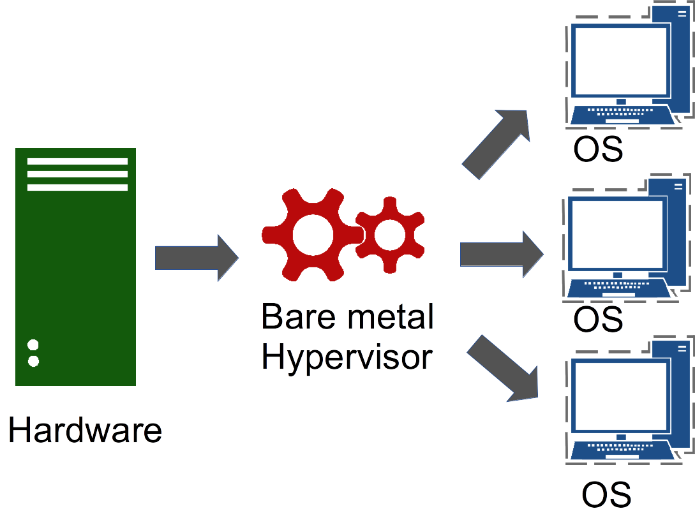

Module 1
Overview of cloud computing and the Nectar services
Sections of this module:
IntroductionCourse overview
What is Cloud Computing?
Cloud services
Virtualization
Common concerns
History
NeCTAR Services
Benefits for your research
Summary
View all sections on one page (Printer friendly)
Virtualization
The main technology used to enable cloud computing is virtualization. This basically means that the hardware is “simulated”, and therefore virtual. The virtual hardware runs on an actual machine. We can simulate a whole computer including the operating system. Several virtual computers can then run on one larger, more powerful computer.

A virtual machine (short: VM) is a software implementation of a machine (for example, a computer) which executes programs just like a physical machine. The term machine most commonly refers to a computer, but it could also be another type of hardware. The virtual machine runs on a physical computer which may run several VMs at a time, distributing the workload of the VMs onto its physical CPUs and memory. A virtual machine appears to the user as a real computer.
The image below shows a symbolic physical computer with 4 CPUs, which runs two virtual machines: The first with two CPUs, the second with one. The virtual machines share the hardware on the physical computer to simulate their hardware.


One physical computer can theoretically run a large number of virtual machines. One physical CPU can simulate several virtual CPUs, which then share the processing time. This is sometimes acceptable because often CPUs actually only use a small percentage of the CPU, when there is not much to compute at the time. So it is possible to simulate for example 4 virtual CPUs on one real CPU, and if 3 of them are idle (use 0% of the CPU), the 4th is able to use 100% of the processing capacity. Of course, if the several virtual CPUs share the processing power of one physical CPU, there is a competition and not all virtual CPUs can run at the same speed. Such competition is often referred to as “noisy neighbours”. To avoid this problem, NeCTAR locks each virtual CPU to one physical CPU; so each virtual CPU is always guaranteed to have the full CPU capacity exclusively available, without facing competition.
Each virtual machine is a fully simulated computer which can have its own operating system and software running. For example, a physical computer that is operating on Microsoft Windows may run two virtual machines: (1) one with the Ubuntu Linux operating system, and (2) another VM with Windows. Each virtual machine looks like an actual computer to the user. They can log on to the computer and use it as if it was a real one. It is possible to connect via a remote desktop if it has been configured; or, connecting via a command line is possible too.
We can run many of such virtual machines on just one (more powerful) physical machine. With several machines running on just one, idle computing resources can be allocated and used more efficiently.
Not all computers are able to run a full virtualization of a virtual computer. Full virtualization is achieved when the virtual machine is identical to a real computer. Specialized hardware assistance is required for full virtualization, namely extensions of standard CPUs. So it is likely that your regular office computer cannot run a full virtualization of a VM. Cloud service providers usually are equipped with such specialised hardware — The NeCTAR infrastructure can run full virtualizations.
Virtual Machine vs Real Machine
A “real machine” is a physical computer, whereas the “virtual machine” is a simulated computer running on another physical computer. In short, the differences and similarities between a real and a virtual machine are as follows:
Similarities: They have an operating system, network access (a real IP address), and hard disk storage.
Differences: For virtual machines, there is no hardware maintenance! You can copy a virtual machine (take a “Snapshot”) for backup purposes, and you can customise it rapidly.
Hypervisors
The Hypervisor or Virtual Machine Manager is the software that manages communications between the physical machine’s processor and memory, and the VMs running on it. The hypervisor is a piece of software that conceptually sits between your virtual machine and the physical computer and manages your virtual machine.
When you want to create or destroy your virtual machine, the hypervisor takes care of that for you, and while your machine is running, the hypervisor manages the execution of your virtual machine.

The downside to this virtual world is an increased opportunity for hackers to exploit vulnerabilities. The attack surface has increased because vulnerabilities may not only exist in the physical equipment, but also in the hypervisor. However such vulnerabilities can be addressed if proper care is taken. Security issues and how they can be addressed is subject to discussion in Module 8.
There are two types of hypervisors: (a) Type-1: native or bare-metal hypervisors and (b) Type-2: hosted hypervisors.
The difference is that (a) runs directly on the physical computer’s hardware (the hypervisor is like an operating system for itself). Therefore, they are sometimes called bare metal hypervisors.

Hypervisor (b) runs on top of an operating system, just like normal computer programs do, therefore it is referred to as hosted hypervisor.

There are also hypervisors that are a blend of both types (a) and (b). The Kernel-based Virtual Machine (short: KVM) for example, which is used in the NeCTAR cloud, is a modified version of the underlying linux operating system.
FAQ
Question: How many VMs can run on one physical core?
Answer: Normally, the hypervisor won’t lock one VMs virtual processor to a specific physical core. Virtualization is done to allow better utilization of available hardware. If you only allocated one virtual processor to each physical processor, you would likely have lots of idle time, because each VM is unlikely to be using 100 percent of its CPU.
Therefore, it is common to allocate a larger number of virtual processors to fewer physical processors. The hypervisor takes care of scheduling the CPU work across the physical cores.
Note: At the time of writing, the NeCTAR cloud allocates one physical core to each virtual core, so users never share a core with others. However, this may change in future.
Question: I have heard of the Java virtual machine (JVM) – what’s the difference to a virtual computer?
Answer: In the context of cloud computing we are talking about system virtual machines in which the whole computer incl. the OS is simulated. However the concept of virtualization works at different levels, there also are process or application virtual machines, which support only one process (as opposed to lots of programs running on an OS). The supported “process” is the actual application to be run, i.e. the Java Application.
JVM is one example for an application virtual machine. The VM is started and shut down together with the program, so the program basically “runs on top” of the application virtual machine. The main purpose of this is to provide a decoupling element (the VM) between the program and the OS. The program can then be developed independent of the platform, and only dependent of the VM. Different versions of the VM may be provided for each OS (e.g. JVM for Windows, Linux, Mac, etc).

 This work is licensed under a
This work is licensed under a